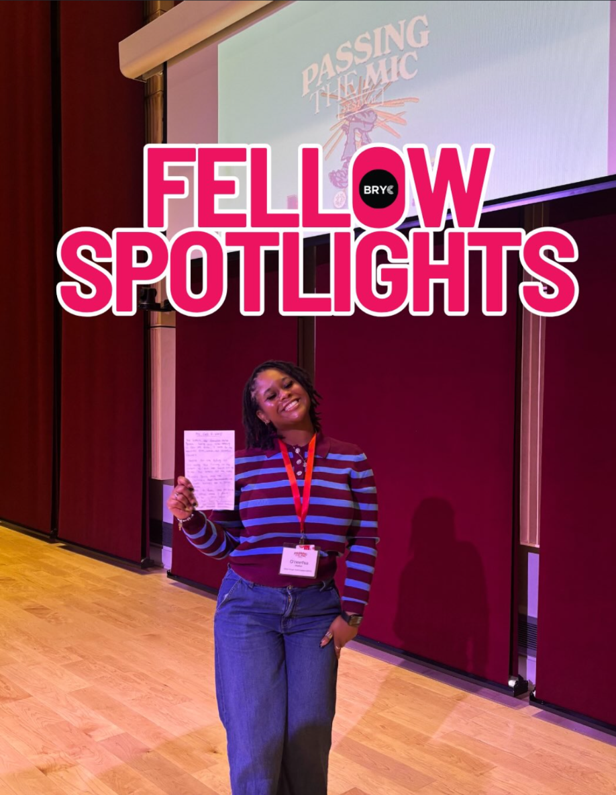

ARTS · POETRY
Oneethia finds her voice on stage.
BRYC senior Oneethia performed at the University of Wisconsin–Madison's Passing the Mic Festival, sharing her poetry and creativity with a wider audience.
Fellow spotlight · BRYC Instagram